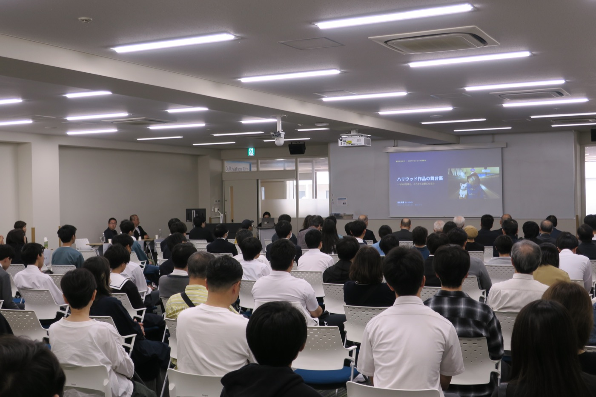

活動実績
-
2026年11月3日 福岡工業大学 NESTプロジェクトスタート告知講演会 登壇（映画・VFX）

福岡工業大学 NESTプロジェクトスタート告知講演会 告知ポスターを見る -
2026年10月29日 九州産業大学 芸術学会 特別講演「ハリウッド作品の舞台裏 ― VFXの仕事と、これから必要になる力」

九州産業大学 芸術学会 特別講演 告知ポスターを見る -
2026年度前期 ビジュアルアーツ専門学校・九州（福岡校）「VFX基礎（CG映像）」講師（オンライン）
-
2026年 映画『Rules of Living』英国上映会（Genesis Cinema London、Edinburgh University Japan Society）上映手配・調整
-
2025年 BAFTA Young Game Designers — ロンドン日本人学校での告知の企画・調整、応募案内・ロードマップの日本語翻訳
-
2024年 BAFTA Television Craft Awards 審査員（Titles & Graphic Identity部門）